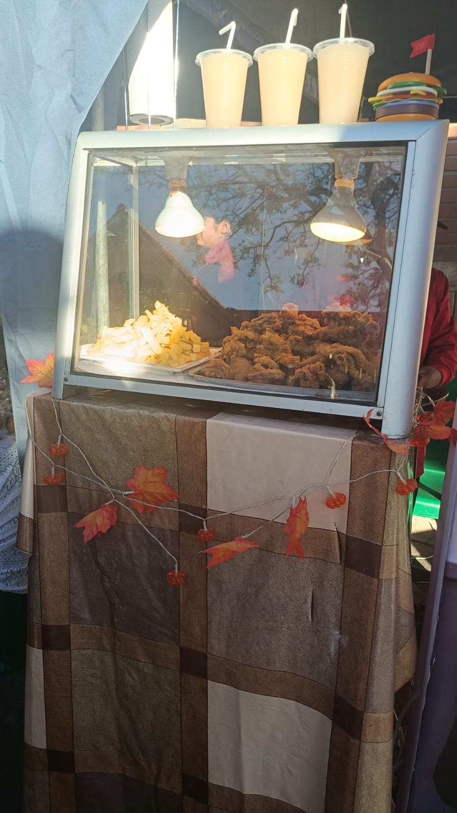

1. ¿Qué se mostró en el rubro de gastronomía y bebidas?
Respuesta: Propuestas de alimentos y bebidas que forman parte de la oferta de la feria.
Una muestra de propuestas gastronómicas y bebidas que forman parte de la experiencia de la feria.
Ver preguntas y respuestas ↓Una muestra de propuestas gastronómicas y bebidas que forman parte de la experiencia de la feria. Las fotografías muestran ejemplos del material recopilado durante el recorrido de la feria.



Estas preguntas resumen información relacionada con el rubro. Cuando no se contaba con respuestas registradas de una entrevista, se redactaron respuestas orientativas para completar el material.
Respuesta: Propuestas de alimentos y bebidas que forman parte de la oferta de la feria.
Respuesta: Mantener la higiene de las manos, los utensilios y las superficies de preparación.
Respuesta: Los ingredientes principales, el precio y cualquier información útil sobre el producto ofrecido.
Este es el texto utilizado como referencia para diseñar el logotipo de este emprendimiento.
Diseña un logotipo llamativo y atractivo para un emprendimiento de gastronomía y bebidas. Incluye elementos relacionados con la comida, como platos, utensilios, alimentos frescos o vasos. Utiliza colores cálidos como rojo, naranja y amarillo para transmitir sabor, energía y confianza. El diseño debe ser original, fácil de recordar y adecuado para una página web comercial. Utiliza un fondo transparente.